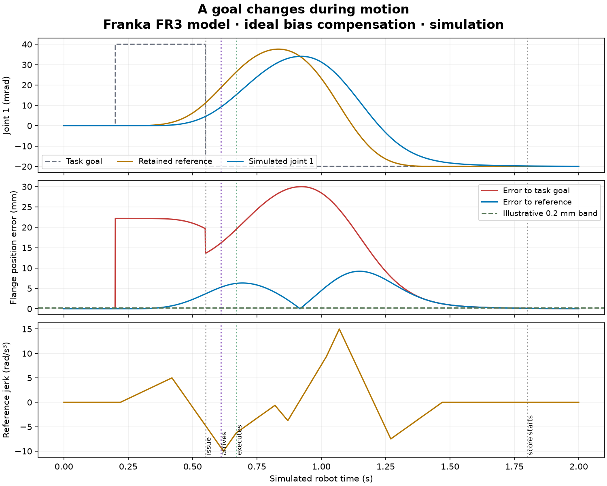

Franka preparation · 17 October 2026
Before the real robot
A goal changes while an arm is moving. We retain the old motion, accept the new goal, and watch the difference between the task, the reference, and the arm.
This is a simulation rehearsal. We used a pinned seven-joint Franka FR3 model. The eventual robot variant is still open. This is not a Franka firmware test, a learned-policy test, or hardware acceptance.
16 runsFour tasks, two servo modes, two integration steps.
32,016 rowsSaved physical and reference states. All runs completed.
9.21 mmPeak reference-tracking error in the illustrated queued reversal.
Reaching the goal is only part of the job
The ideal-assist model ends close to the goal. It still departs from the reference during motion. That departure is why we cannot attach the current scalar Lean tracking bound to the whole arm.

The task goal can change immediately. The retained reference takes time to respond. The physical arm adds another response. The 0.2 mm band is an illustrative score, not a certified robot limit.
What passed, and what failed
Stock model actuators leave about 6.05 mm of flange error under gravity, even during a hold. Adding the model's gravity and Coriolis force removes that hold error. This is an ideal simulation assist; it does not reproduce Franka's controller. The assist acts outside the actuator force clamp, so it does not certify a total torque limit. Flange scores measure world-frame position and omit orientation.
These values use the 0.5 ms integration step and the sampled window from 1.8 to 2 seconds. All eight ideal-assist runs meet the final position band. All eight stock-actuator runs fail it. Final speed and acceleration were not acceptance tests.
What we can do before hardware
- Complete the motion contract. The separate scalar reversal comparison shows that a jerk-only guard can accept a motion that exceeds its acceleration limit. Add acceleration and velocity checks without hiding those failures.
- Close the arm-model gap. Declare a coupled feedback law and test its transient bounds. Keep task progress and reference tracking as separate scores.
- Use the robot's execution clock. Prepare timestamped requests and logs for issued, received, accepted, and executed times. Pin the actual Franka version, payload, frames, and filter settings before a hardware trial.
Run and reproduce this rehearsal · Franka hardware plan · Closest prior work · All run results · Audit scope
New conditional task proof · 26-second Manim explanation · Independent scalar comparison · Working paper